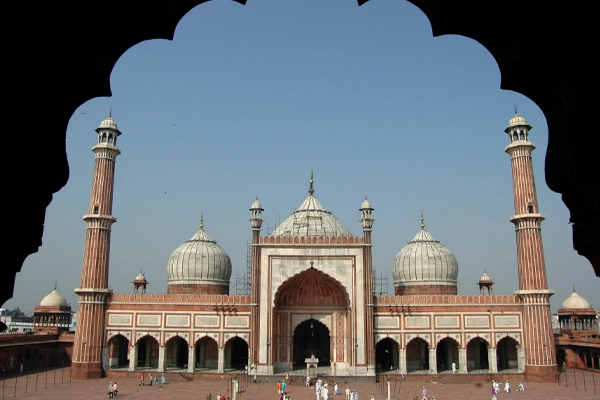
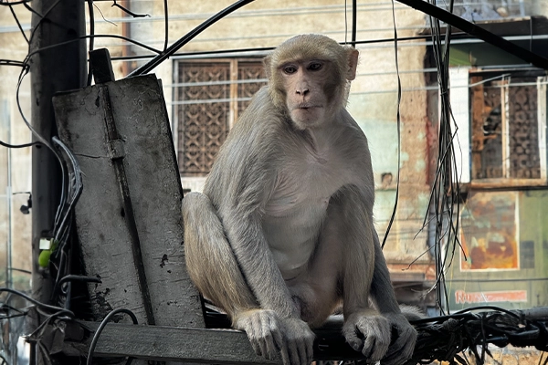
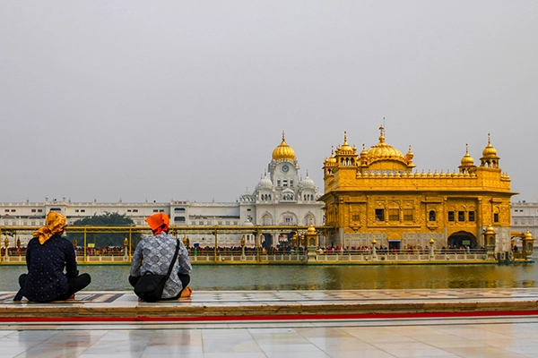
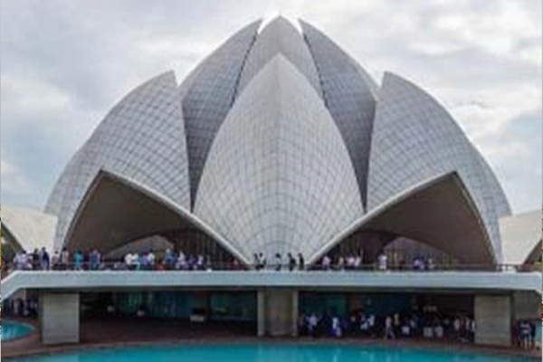

Durée : 9 jours / 8 nuits
|Destinations : Delhi - Agra - Jaipur - Varanasi
Embarquez pour un voyage de 9 jours à travers le cœur culturel de l'Inde, en explorant le célèbre Triangle d'Or ainsi que la ville spirituelle et historique de Varanasi. Cet itinéraire unique promet une expérience immersive, combinant les merveilles architecturales de Delhi, Jaipur, Fatehpur Sikri et Agra avec le charme spirituel de Varanasi. Des forts majestueux aux ghats sereins le long du Gange, cette visite offre une riche tapisserie du patrimoine diversifié de l'Inde.
Découvrez les merveilles historiques du Triangle d'Or : Explorez les monuments emblématiques de Delhi, notamment le Fort Rouge et le Qutub Minar. Découvrez le charme royal du Palais de la Ville de Jaipur et l'importance historique de Fatehpur Sikri. Admirez le Taj Mahal à Agra, symbole de l'amour éternel.
Séjour spirituel à Varanasi : Découvrez l'essence spirituelle de Varanasi, l'une des villes les plus anciennes du monde. Assistez à la Ganga Aarti sur les ghats, faites une promenade en bateau le long du fleuve sacré et explorez les ruelles étroites remplies de temples et de marchés vibrants.
mmersion culturelle : Imprégnez-vous de la culture vibrante du Rajasthan à Jaipur, explorez les marchés locaux et savourez la cuisine traditionnelle du Rajasthan. Découvrez le mélange unique d'architecture hindoue et moghole à Fatehpur Sikri.
Exploration historique : Visitez les monuments historiques qui racontent les récits de la riche histoire de l'Inde, notamment le tombeau de Humayun, le Fort d'Amber et le Fort d'Agra. Explorez la ville ancienne de Varanasi, ornée de ghats, de temples et de rituels culturels.
itinéraire détaillé
Jour 1 - Arrivée à Delhi :
Votre aventure de 9 jours commence à votre arrivée dans la dynamique ville de Delhi. Après un transfert sans souci depuis l'aéroport, installez-vous dans votre hébergement choisi pour un enregistrement confortable et une détente bien méritée. La soirée vous invite à vous imprégner de l'énergie de la capitale à votre rythme. Nuit à Delhi.
Jour 2 - Visite de Delhi :
Immergez-vous dans la riche histoire de Delhi avec une exploration matinale du Fort Rouge. Plongez au cœur de l'ancien Delhi avec une visite de la Jama Masjid, la plus grande mosquée de l'Inde, et naviguez dans l'atmosphère animée de Chandni Chowk. L'après-midi, découvrez le Qutub Minar imposant et le tombeau serein de Humayun. En option, terminez la journée par une visite en soirée de l'India Gate illuminé. Nuit à Delhi.
Jour 3 - De Delhi à Jaipur :

Partez pour un trajet pittoresque vers Jaipur, renommée pour son architecture royale et ses teintes roses. L'après-midi est consacré à l'exploration du Hawa Mahal, le Palais des Vents, et du majestueux Palais de la Ville. Temps libre en soirée pour une exploration personnalisée des marchés locaux. Nuit à Jaipur.
Jour 4 - Jaipur - Fort d'Amber et Jal Mahal :

Commencez votre journée par une excursion matinale au fort impressionnant d'Amber, où une promenade à dos d'éléphant optionnelle ajoute une touche royale. Visitez le Jal Mahal, un palais serein niché au milieu du lac Man Sagar. L'après-midi est libre pour profiter à votre guise ou participer à des activités optionnelles. Plongez dans le patrimoine culturel de Jaipur en soirée. Nuit à Jaipur.
Jour 5 - De Jaipur à Fatehpur Sikri puis Agra :
Conduisez jusqu'à Fatehpur Sikri, site classé au patrimoine mondial de l'UNESCO, et explorez ses fascinantes structures historiques. Poursuivez votre voyage jusqu'à Agra, où l'après-midi est consacré à l'exploration du Fort d'Agra. Une soirée libre vous invite à découvrir le charme des marchés locaux. Nuit à Agra.
Jour 6 - Agra - Lever de soleil au Taj Mahal :

Commencez la journée par une visite matinale du Taj Mahal, où le lever du soleil ajoute une touche magique. Plongez dans l'histoire avec une visite du tombeau d'Itmad-ud-Daulah. L'après-midi est libre pour profiter à votre guise ou participer à des activités optionnelles. Nuit à Agra.
Jour 7 - D'Agra à Varanasi
Envolez-vous pour Varanasi, le cœur spirituel de l'Inde, où histoire et spiritualité convergent. Passez l'après-midi à explorer Sarnath, un important site de pèlerinage bouddhiste. Au coucher du soleil, assistez à la Ganga Aarti envoûtante sur les ghats. Nuit à Varanasi.
Jour 8 - Varanasi - Promenade en bateau sur le Gange et temples :

Vivez les rituels spirituels avec une promenade en bateau tranquille sur le Gange le matin. Parcourez les ruelles étroites, découvrant des temples anciens et des marchés vibrants. L'après-midi est libre pour une exploration personnelle ou la détente. Nuit à Varanasi.
Jour 9 - De Varanasi à Delhi et départ :
Profitez d'une matinée tranquille ou participez à des activités optionnelles. Prenez un vol de retour pour Delhi, où le voyage a commencé. Selon votre heure de départ, profitez de quelques moments libres pour une exploration de dernière minute ou des achats. Dites adieu à l'Inde en partant de Delhi, concluant une expédition transformative de 9 jours à travers le Triangle d'Or et le havre spirituel de Varanasi. Cet itinéraire unique promet un mélange immersif d'histoire, de spiritualité et de culture, offrant une expérience profonde des paysages et du patrimoine diversifiés de l'Inde.
Cet itinéraire est proposé à titre indicatif.
En tant qu'experts en création d'itinéraires personnalisés, nous les adaptons à vos horaires et préférences. Merci d'indiquer votre catégorie d'hôtel préférée (5 étoiles, 3 étoiles, économique) avant de réserver. De plus, si vous souhaitez organiser votre propre hébergement, nous ajusterons le programme en conséquence.
Inclus dans ce circuit
- Voiture privée de luxe climatisée.
- Destinations couvertes : Delhi, Agra et Jaipur.
- Prise en charge et retour à l'hôtel / aéroport de New Delhi.
- Promenade à dos d'éléphant (Jaipur).
- Promenade en charrette à cheval / tonga au Taj Mahal.
- Promenade en rickshaw dans le vieux Delhi à travers le bazar traditionnel.
- Hébergement de trois nuits en occupation simple / double avec petit déjeuner et taxes.
- Tous les frais d'entrée / tickets pour les monuments.
- Guide agréé dans votre langue préférée (Delhi, Agra, Jaipur).
- Tous les impôts – péage d'autoroute express, stationnement à l'aéroport, frais de stationnement des monuments, carburant et taxes d'état.
Non-Inclus dans ce circuit
- Pourboires pour le chauffeur et le guide.
- Déjeuner et dîner au restaurant ou à l'hôtel.
- les vols d'arrivée et de retour
Vous souhaitez plus d'informations
N'hesitez à nous contacter pour plus de renseignements sur nos services, nous sommes à votre ecoute pour faire de ce voyage un moment inoubliable
Points clés :
- Prise en charge n'importe où à Delhi/Gurugram/Noida
- Durée : 8 nuits et 9 jours
- Confirmation instantanée
- Coupe-file
- Guide en direct : anglais, français, espagnol, allemand, italien, russe
- Accessible en fauteuil roulant
- Lieu de départ - De n'importe où à Delhi/Gurugram et Noida sur demande
Les Plus
- Visite de New Delhi – Qutub Minar, Tombe de Humayun, India Gate, Temple du Lotus et résidence du président.
- Visite d'Agra – Taj Mahal et Fort d'Agra.
- Visite de Fatehpur Sikri sur le chemin de Jaipur.
- Visite de Jaipur – Fort d'Amber, promenade à dos d'éléphant, City Palace, Jal Mahal, Hawa Mahal et Jantar Mantar.
- Guide touristique agréé expérimenté dans votre langue, ayant une connaissance approfondie des monuments, de la culture et des traditions.
- Transport de luxe tout au long de la visite.